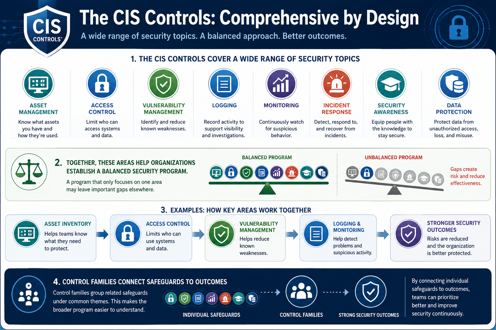

What Are the CIS Controls?
Understanding Control Families
Connecting to LMS... Progress: in progress
Version 1.0 | Date: 2026-06-16 | Educational guidance for understanding CIS Controls concepts.

Narration
The CIS Controls cover a wide range of security topics including asset management, access control, vulnerability management, logging, monitoring, incident response, security awareness, and data protection.
Together, these areas help organizations establish a balanced security program. A program that only focuses on one area may leave important gaps elsewhere.
For example, asset inventory helps teams know what they need to protect. Access control limits who can use systems. Vulnerability management helps reduce known weaknesses. Logging and monitoring help detect problems.
Control families make the broader program easier to understand because they connect individual safeguards to security outcomes.